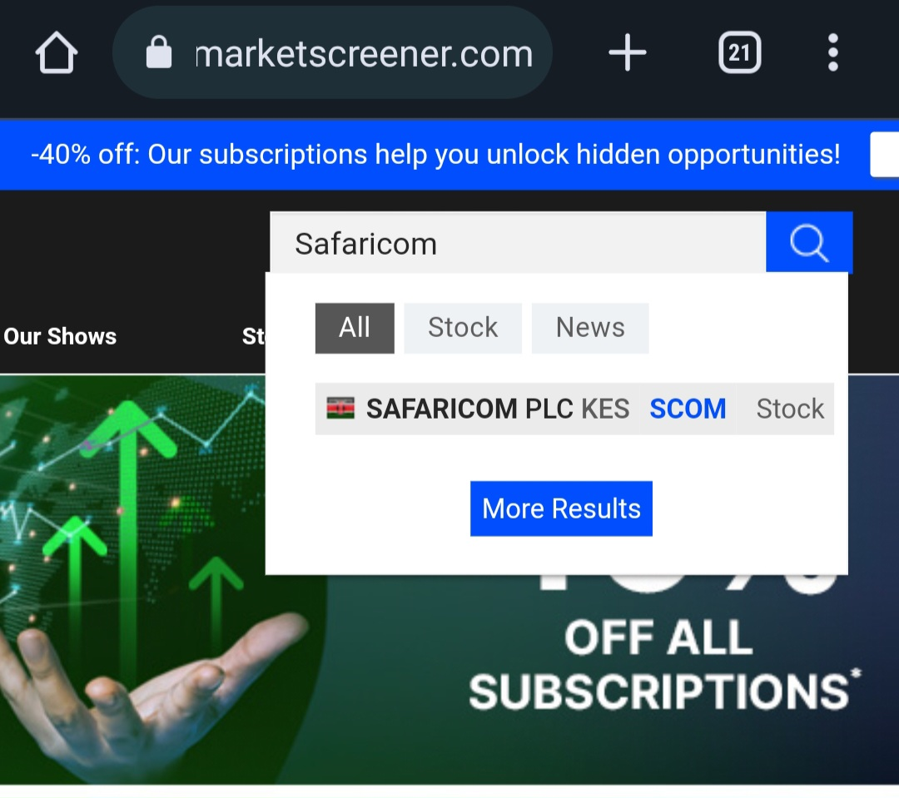

Research Kenyan stocks using M.marketscreener
A stock market screener is a powerful tool that helps investors make informed decisions in the complex world of stock trading. With a stock market screener, you can easily filter through thousands of stocks and narrow down your search based on specific criteria, such as market capitalization, price-to-earnings ratio, dividend yield, and more. This saves you time and effort, allowing you to quickly identify potential investment opportunities that meet your specific requirements. Whether you're a novice or seasoned investor, a stock market screener can help you stay on top of market trends and make smarter investment decisions.m.marketscreener is a mobile version of the popular financial website, marketscreener.com. It provides a comprehensive platform for investors and traders to access real-time financial news, quotes, and analysis. In this article, we will explore the features of m.marketscreener and its benefits for traders and investors.
Features:
M.marketscreener offers a range of features for its users, including:
Real-time financial news: The platform provides access to real-time financial news from leading sources such as Reuters, Bloomberg, and MarketWatch. This allows traders and investors to stay up-to-date with the latest market trends and news that may affect their investments.
Customizable watchlist: The platform allows users to create and customize their own watchlist of stocks and other financial instruments. This makes it easy for users to monitor their investments and track the performance of their favorite assets.
Technical analysis tools: M.marketscreener provides a range of technical analysis tools such as charts, indicators, and historical data. This allows users to analyze the performance of stocks and other assets and make informed investment decisions.
Financial data: The platform offers access to a range of financial data such as earnings reports, dividends, and stock splits. This allows traders and investors to make informed decisions based on the latest financial information.
Benefits:
M.marketscreener offers several benefits for traders and investors, including:
how to use M.marketscreener
Assume we want to research on Safaricom plc.Here are the steps on how to research on Safaricom PLC using M.marketscreener: 1. Go to the M.marketscreener website (www.marketscreener.com).
2. On the homepage, type "Safaricom" in the search bar and click on the magnifying glass icon.

3. From the search results, click on "Safaricom PLC" to access the company's profile page.
4. On the Safaricom PLC profile page, you will find a wealth of information on the company, including its stock performance, financials, news, and key executives.
5. To analyze Safaricom's financial performance, click on the "Financials" tab to access its income statement, balance sheet, and cash flow statement.
6. You can also use the "Analysis" tab to view Safaricom's key ratios, such as price-to-earnings (P/E) ratio, dividend yield, and return on equity (ROE).
7. If you're interested in Safaricom's stock performance, click on the "Stock Quotes" tab to view the company's real-time stock price and chart.
8. To stay updated on Safaricom's latest news and developments, click on the "News" tab to read articles from reputable news sources about the company.
9. Finally, you can set up alerts to receive notifications about Safaricom's stock price, news, and financials by clicking on the "Alerts" tab.
These are the basic steps to research on Safaricom PLC using M.marketscreener. Remember to always verify any information you find by cross-checking with other sources before making any investment decisions.